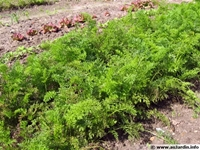

Plus de Nature près de chez moi!
La ville est perçue par beaucoup comme un espace hostile à la nature, voire un milieu anti-nature. la majorité des français déplorent de ne pas avoir suffisamment d'espaces verts à proximité de leur logement. C'est l'un des faits marquants de l'urbanisme actuel... Les ménages résidant en immeuble collectif ressentent plus que d'autres l'absence de nature. Par rapport à un ménage habitant en maison individuelle dotée d'un jardin, la différence est significative. 84% des Français estiment qu'il faut créer davantage de jardins et de parcs en milieu urbain.
Plusieurs solutions!
 Pour donner un peu de gaité et de couleur à votre balcon, les fleurs sont indispensables. En fonction de vos goûts, de vos envies et des contraintes de votre balcon (surface, ensoleillement, budget), les possibilités sont multiples. Toujours pas convaincut? pourquoi ne pas y créer une pelouse ? Les plantes grimpantes à feuillage persistant ou coloré et plantes à fleurs seront mises en valeur, et leurs multiples couleurs trancheront avec bonheur sur le vert d’un faux gazon pour balcon. Sans entretien, ce gazon saura faire illusion et parfaire votre coin de verdure. Il existe aussi bien des gazons synthétiques ou de pelouses façon pâturage d’aspect naturel susceptibles d'agrémenter parfaitement ce petit espace détente.
Pour donner un peu de gaité et de couleur à votre balcon, les fleurs sont indispensables. En fonction de vos goûts, de vos envies et des contraintes de votre balcon (surface, ensoleillement, budget), les possibilités sont multiples. Toujours pas convaincut? pourquoi ne pas y créer une pelouse ? Les plantes grimpantes à feuillage persistant ou coloré et plantes à fleurs seront mises en valeur, et leurs multiples couleurs trancheront avec bonheur sur le vert d’un faux gazon pour balcon. Sans entretien, ce gazon saura faire illusion et parfaire votre coin de verdure. Il existe aussi bien des gazons synthétiques ou de pelouses façon pâturage d’aspect naturel susceptibles d'agrémenter parfaitement ce petit espace détente.
 Il est tout à fait possible d'aménager un petit potager sur le balcon. Bien sûr, impossible de nourrir toute une famille avec une culture de ce type, mais vous pourrez tout de même agrémenter votre cuisine du quotidien avec quelques produits frais et bien choisis (des tomates par exemple, sans oublier les herbes aromatiques). La meilleure période pour la plantation ? Du printemps jusqu'à la fin de l'été, pour éviter que vos plantes ne gèlent.